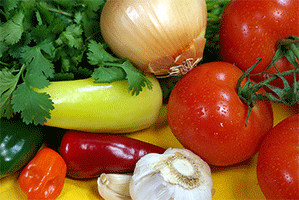
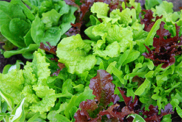
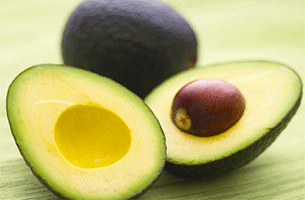

Dont forget your fruits and vegtables! Having a healthy balanced diet of fruits and vetables keeps a smile on your face and makes your tummy happy too!

A mixture of vetables like tomatoes and onions along with other spices can make a wonderful homemade salsa! One idea is to stir the tomatoes, green bell pepper, onion, cilantro, lime juice, jalapeno pepper, cumin, salt, and pepper in a bowl. Be creatve and have fun with it!
Did you know there are hundreds of hybrids of luttuce?! Everyone is familiar with lettuce but most people do not venture out of the basic types (iceburg, butterhead, leaf and romaine). Be creative and find the perfect lettuce that fits and compliments the burrito.


Avacados are a great idea to add to the burrito. Avacados are known best as the creamy main ingrediant in gaucamole, they are high in healthy monounsaturated fats and a good source of fiber, vitamins, and minerals.